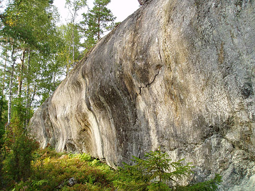

Se
Kraftsten
. Om man fortsätter gå ytterligare en bit längst värmdöleden kommer man till fler klätterbara väggar, bla annat Vågväggen ca 10 problem med nice men udda klättring:
Kategori:Stockholm
Kategori:Nacka-Värmdö
Copyright (C) Permission is granted to copy, distribute and/or modify this document under the terms of the GNU Free Documentation License, Version 1.3